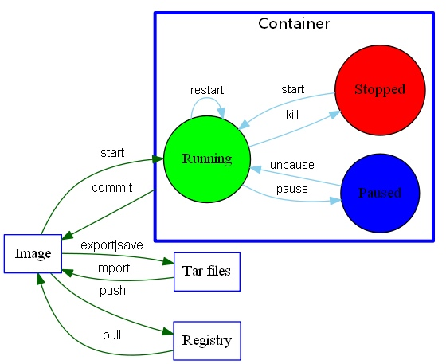

安装
- 官方文档
- 国内用户推荐使用get.daocloud.io来方便安装docker
确保docker运行正常：docker run hello-world
卸载
针对使用wget安装的
sudo apt-get purge docker-engine
sudo apt-get autoremove --purge docker-engine
rm -rf /var/lib/docker
设置
修改docker存储目录
ubuntu : /etc/default/docker ,使得：DOCKER_OPTS="-g /somewhere/else/docker/"
sudo service docker stop
sudo cp -r /var/lib/docker /somewhere/else/docker #/somewhere/else/docker目录本来不存在
sudo service docker restar
centos参考这里:Best way to move docker directory
通过修改配置，可以让docker远程可访问
/etc/default/docker
使用
所有的指令示意图可参考：

列出docker的常用指令,主要便于参考,(以下命令可能需要带上sudo),其实我日常使用的基本只有4-5条
docker version : 可用于查看docker是否安装完成
对image的操作
- docker search image_name : 在docker hub上搜索镜像
- docker pull image_name:tag_name : 拉取镜像
- docker images : 列出镜像列表
- docker rmi image_name : 删除镜像
- docker history image_name : 显示镜像的历史
- docker inspect image_name : 检查镜像底层信息，json化输出
保存和加载镜像
- docker save ubuntu:latest > ubuntu_save.tar : 保存镜像到一个tar包
- docker load < ubuntu_save.tar : 加载一个tar包格式的镜像(之后的镜像信息都在，包括名字)
- sudo docker export
> ubuntu_export.tar : 保存容器到一个tar包 - cat ubuntu_export.tar | docker import - wwj/ubuntu : 加载容器到一个印象
save和export的区别:
- Export命令用于持久化容器（不是镜像） (sudo docker ps列出容器）
- Save命令用于持久化镜像（不是容器）(sudo docker images列出镜像)
- The exported image will not have any layer or history information saved, so it will be smaller and you will not be able to rollback
发布image
- docker push image_name
对container的操作
启动容器（run）
sudo docker run [OPTIONS] IMAGE[:TAG] [COMMAND] [ARG...]
好比我通常使用edx_cypress_docker时时这样run的：
sudo docker run -itd -P wwj718/edx_cypress_docker:1.05
其中：
- -d:后台模式
- -i -t参数是为了同容器进行数据交互
可选：
- --rm : Docker能在容器结束时自动清理其所产生的数据
更多的使用细节参考Docker run 命令的使用方法
查看容器（ps）
docker ps
对容器的日常操作
- docker commit ID image_name:tag_name
- docker rm -f $(docker ps -aq) : 删除所有容器
- docker rm Name/ID : 删除单个容器
- docker kill Name/ID : kill一个容器
- docker restart Name/ID : 重启一个正在运行的容器
- docker logs Name/ID : 从一个容器中取日志
- docker diff Name/ID : 列出一个容器里面被改变的文件或者目录
- docker top Name/ID : 显示一个运行的容器里面的进程信息
- docker cp Name:/container_path to_path : 从容器里面拷贝文件/目录到本地一个路径
- docker exec Name/ID /bin/bash
- exec与attach的区别参考这里
Dockerfile
相关服务
- docker hub:docker官方镜像托管，支持在线Build